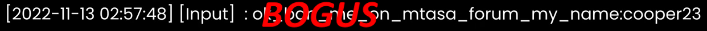
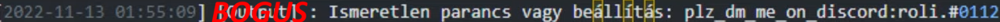
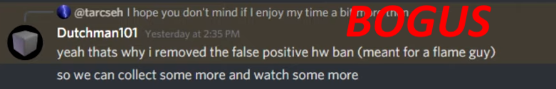
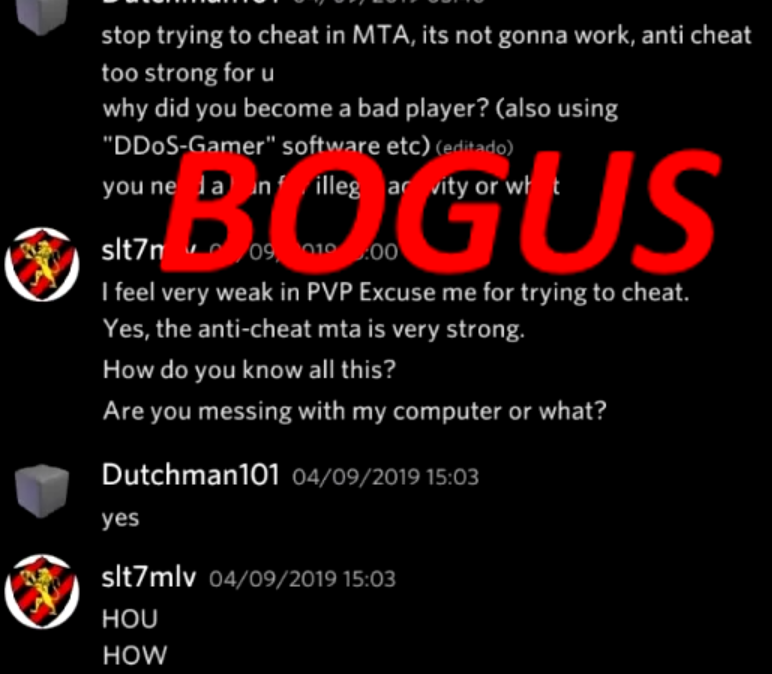
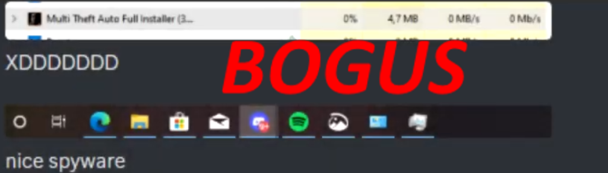
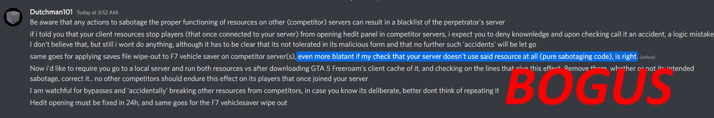
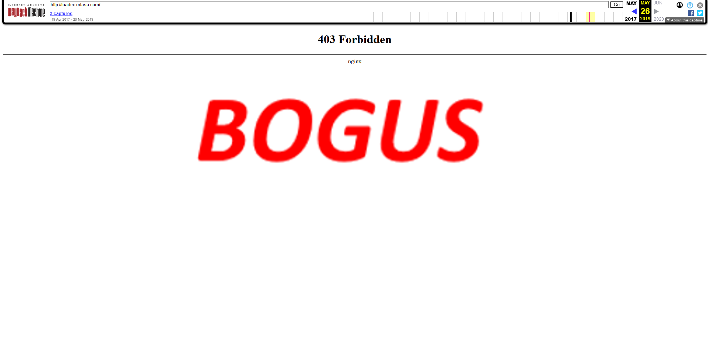

Hello there..
I am writing to formally apologize for my actions involving controversy, conspiracy theories, fabrications, false accusations, malicious activity, spreading lies,
and any other harmful behaviours directed towards Multi Theft Auto and Dutchman101.
My behaviour was completely unacceptable and unjustifiable.
I realize now the harm and disruption caused by my actions, not only to the reputation of Multi Theft Auto but also to the individuals involved, particularly Dutchman101.
I deeply regret my actions and the negative impact they have had.
I take full responsibility for my behaviour and sincerely apologize to the entire MTA community, including the developers, moderators, and players who were affected.
I understand if my actions have damaged trust and credibility, and I am committed to making amends and learning from this experience.
I have learned a valuable lesson from this experience, and I am committed to improving myself and ensuring that nothing like this happens again.
I was involved in malicious acts up to infecting other players' PCs, which was completely outrageous, unacceptable.
I have been globally banned specifically for malicious activity, and ever since, I seeked to destabilise Dutchman and MTA,
which was a completely idiotic thing to do, and which caused much harm for lots of users.
Once again, I apologize openly to Dutchman101 and MTA for my actions.
I hope that over time, I can rebuild trust and demonstrate through my actions that I am genuinely remorseful and committed to positive contributions.
My site formerly hosted defamatory content towards Multi Theft Auto, and Dutchman101's reputation.
Part of the campaigns of lies that I mentioned above.
I have been EXTREMELY biased against Multi Theft Auto, its AC, and Dutchman101,
and to undo my mistakes, I have decided to make this site instead.
Below, you may take a tour through the Table of Contents or by simply scrolling down,
and see why I have been so awfully wrong, and am now ashamed of it.
We will clear up every single one of my accusations and lies.
1) "Spyware"
2) "Script Stealing"
3) "Scamming"
4) "Unjust Banning"
5) Closing Statement
Those images were considered evidence, but in reality they are extremely fallacious if we acknowledge the presumption of innocence.
The AC has never actually been proven to collect all the information about, and passing through your PC.
It being closed source is not an argument at all, and is natural, and normal.
You would obviously not want bad elements, such as cheaters, to know the inputs and the outputs of the AC, being able to exploit it through weaknesses,
or just about any methods they could find by researching publlicly available source code.
It is true that the AC system is designed to ensure fair play by detecting and preventing cheating.
The veracity of the claim that it collects keystrokes or extensive personal data is VERY low, and has never been backed by solid evidence.
The system only gathers essential data required to identity cheats.
Any data collected is said to be anonymized and used solely for this purpose, adhering to privacy standards.
Nothing unusual so far, this is merely MTA communicating with its master server.
There is a date and time on the first picture, but not the second picture.
It would be incorrect to assume that they were taken within the same time span.

Essentially the same conclusion here, the picture that follows does have time, but lacks the date.
It is also unlikely that both discord bot and server log time information are synchronized throughout the same timezone.

Even if these pictures were not falsified (which they are), we cannot accuse him of anything here, besides paying him the respect for his dedication to security.
Any assumption could easily and wrongly be biased and thus defamatory.

This is very obviously falsified as well.

This is also very obviously falsified and you can tell by the poor English.
Here is a picture showing the installer not being able to exit after completing the installation.
It was taken out of context to deceive you into thinking MTA is a spyware.
However, this isn't concrete proof of spyware.
And such accusation is similar to assuming that the Earth is flat.


This also proves nothing, and is a check that could even be done by any regular player.

The whole "luadec" thing is nothing to be shocked about, as it is fully in the right of MTA to view compiled sccripts to check if they contain potential malicious code.
Imagine you compile a script to destroy servers, and upload it in the community.
We may only pay MTA respect for this.
Another false accusation was the connection of an IP address of MTA's update server to detected "malware",
which can be proven false by any user willing to do his own research.
This "awkward" thing is just detected malicious resources/serials.
Nothing suspicious, zero evidence of spyware.
Below is every single script which had been accused of being "stolen."
A DKR Freeroam script, justly obtained by Dutchman101 when he was the owner of said server.
It was stolen, and translated into Russian, and then uploaded on the community before Dutchman101 could upload it.
Completely self-made resource, it's just that the uploader stole it from the cache and uploaded on the community before Dutchman101 could.
Completely self-made resource, no evidence of the code being stolen.
It's just similar to another one.
Completely self-made resource, no evidence of the code being stolen.
There were certain accusations of MTA "scamming" server owners out of their money.
This is also false, and none of the 'evidence" that was present on the old site is even worth reviewing, as it is TOTAL bogus which is literally irrelevant.
Many servers have had such issues, and they are always fixed by the MTA team.
This is also ridiculous, and the "evidence" is similar in the case of the also absurd, and ridiculous "Scamming" accusations.
Every single player banned from MTA has been definitely banned for a raeson, I can tell you this as someone who himself has been globally banned twice for malicious activity,
and who now knows that it is stupid, and is willing to undo his mistakes.
All of those players are responsible for something.
If you actually go to the forum, you can see the truth and those banned people showing their true colours / their true colours benig revealed.
Now you see the truth.
All of those lies, false accusations, fabrications have been wiped out.
If some more fabrications have been missed,
we will fact check and add them here immediately.
Again, I would like to apologize for spreading all this disinformation, misinformation.
It truly caused harm, and stretched to illegal activities, cybercriminal activities, which I myself am guilty of, and have guaranteed to never be involved in again.
And finally, always do your own research, never believe in such loud accusations, especially against trusted individuals.